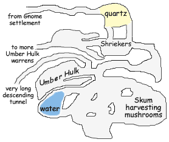

fter three days preparation, the party was ready to depart. Supplies had been laid in, questions about the Wand and incursions of Chaos researched, and Edwin had copied a vast repertoire from the Wizard's Tower spell library. The Tower provided horses, and the party travelled overland to Admundfort on the shores of the Nyr Dyv.
fter three days preparation, the party was ready to depart. Supplies had been laid in, questions about the Wand and incursions of Chaos researched, and Edwin had copied a vast repertoire from the Wizard's Tower spell library. The Tower provided horses, and the party travelled overland to Admundfort on the shores of the Nyr Dyv.
| Magic Items Enchanted | |
| Edwin borrowed a Ring of Sustenance from the Wizard's Tower, so as to require only two hours of sleep each night. He used the extra time to enchant a number of magic items during the overland journey: | |
| 1. | Tiger collar of armor: 4 hours (for Katriana's Tiger Sabrina) |
| 2. | Buckler +1: 4 hours (for Edwin) |
| 3. | Two Quaal's Feather Token (Anchor): 1 hour (for Edwin) |
| 4. | Greatsword +1, 8 hours (for Chaden) |
| 5. | Various Scrolls: 9 hours (for Edwin) |
| 6. | Longbow +1: 8 hours (for Katriana) |
| 7. | add Death Ward property to Edwin's Bracers of Armor: 12 hours |
| 8. | 100 Arrows +1/Bane (Chaotic Outsider): 32 hours (for everyone) |
| 9. | Inscribe 6 Sepia Snake Sigils: 1 hour (for Edwin) |
| 10. | Inscribe 12 Explosive Runes: 1 hour (for Edwin) |
Grapthar
[Editor's note: Grapthar does not speak with the Scottish accent attributed to dwarves in a previous campaign and in OOTS. Nonetheless this Chronicler finds it entertaining to write it as such.]
Aye, th' bloody demonic Darkness be chafin' me ars', tho' it be a sure way to ken we'er any be near. A' dusk we tied th' horses an' start'd te set th' tents when sudd'nly it drop'd black as pitch. One o' th' things tried to ken me with a Fear effect, but Dwarves be not much afra' o' the likes o' them. I cass't Daylight to count'r th' bloody darkn'ss.
The Narrator
There were five Wolf-Spiders, one of which had already snared Edwin and been countered by Gaseous Form. Finally able to see, Chaden hit one spider with two of the newly enchanted Bane Arrows, damaging it significantly. Katriana summoned a Unicorn which immediately attacked the nearest demon. Said demon retaliated by engulfing the Unicorn, Sabrina and Grapthar in webbing. Grapthar's heavy armor worked against him here, pinning him completely while Sabrina and the Unicorn could still move by taking proper care. A second spider rushed in to bite Grapthar, injecting him with strength-draining poison. The third spider bit the only horse which had not immediately run away. Katriana was also bitten, but Druids of her power are completely unaffected by poisons magical or mundane.
Still in Gaseous Form, Edwin tried a new tactic by using a Silent Spell feat to cast Shout (which has only verbal components). The spell caught two of the spiders, but was too low level to seriously hurt them. It also caught the horse which had been bitten, further damaging the poor beast. It limped off, the poison weakening it by the second.
Grapthar broke free of the webs holding him, as Chaden plunked another arrow into the spider she had targeted, killing it. One of the other spiders teleported next to Edwin, but its mandible passed harmlessly through his gaseous form. Katriana called down a Flame Strike upon one spider but was bitten by another. Immune to their poison, Katriana was not terribly hurt by the bites. Sabrina and the summoned Unicorn attacked another spider; Sabrina leaped onto its back to dig in with all four paws and attempt to rip its head off. The spider teleported to a different part of the campsite before the tiger got the chance.
Edwin rematerialized in order to cast Cacophonic Burst, a much more powerful version of Shout. Two of the three spiders caught by the spell died. Chaden fumbled her attacks, breaking the bowstring. Grapthar killed the spider which had poisoned him. Only one spider remained alive, this one larger than the others. Katriana called down a Flame Strike, then the Unicorn impaled the demon on its horn, and Sabrina performed her trademark "grab and disembowel" maneuver. The last, largest spider finally died.
Edwin
The large spider had distinct anatomical differences from its smaller brethren, most notably the two pedipalps attached to its thorax. These extra limbs most likely serve a fine manipulation function. There were also differences in the internal organs, most notably an extra lobe on what I believe to be the liver, but I doubt this to be of particular significance.
The poison of the larger specimen had a different viscosity and color than the smaller demons, and likely has a different effect on its victims. With help from Grapthar the poison sacks of all five demons were extracted to catalyze more antitoxin overnight.
The Narrator
Katriana tracked down the wounded horse, using Neutralize Poison, Cure Light Wounds, and Restoration to restore it to health. The other horses eventually returned or were found. Grapthar cast Neutralize Poison and Restoration on himself to counteract the spider venom. Noticing that Sabrina's rear claws had been unable to damage the demons, Katriana cast Magic Fang twice more and Edwin gave it Permanency.
The next morning the pull of the wand drew the party to the entrance of a warren of caves. Remnants of smashed doors and broken casks attested to occupation by some sort of humanoids in the distant past. The party followed the pull of the wand until the tunnel widened into a very large cave, occupied by what appeared to be a giant badger.
Edwin was overjoyed at the prospect of being able to use his Speak with Burrowing Mammals spell-like ability, but did not invoke it quickly enough. Mazel Quickblade stepped forward to introduce himself and Thisbee, the aforementioned badger. Mazel and his band of gnomes were refurbishing the cave system as their new home. Mazel knew Edwin's great great uncle twice removed (also named Edwin), and the two gnomes chatted at some length. The pull of the wand pointed east and downwards, toward a region which Mazel said was inhabited by "fish-men who harvest mushrooms." The party left their horses in the keeping of the gnomes, who in return could use them to haul out some of the heavy detritus.
Grapthar's Divination spell
Question: "How should we best approach the fish men?"
Answer: (chuckle) "Tread softly and carry a wet sponge."
The Narrator
Everyone save Katriana and Sabrina could see in the dark, a shortcoming quickly rectified with two Darkvision spells. The group followed the tunnel for nearly an hour, descending in Grapthar's estimation
roughly 100 feet deeper underground. Eventually they came to a room surrounded entirely by a huge vein of highly reflective crystalline quartz. Chaden estimated that were the party using any light sources, the reflections from the quartz would have proved an effective alarm for the denizens of the tunnel system.

Chaden spotted several giant mushrooms in the next chamber, and thought they might be Shriekers. Grapthar cast Silence on a copper piece and rebounded it off the wall into the room beyond. There were five Shriekers altogether, and though they were visibly agitated as the party passed the magic blocked their alarms. After some controversy, the party elected not to dispatch the Shriekers. Edwin cast Arcane Eye to explore the tunnels ahead.
Chaden Contarian
The Arcane Eye saw eight humanoid creatures with fish-like tails and slimy grey skin. Edwin believed they were a race called, and he swears he is not making this up, Skum. I mean really, did they choose that name for themselves? They should have found a dictionary of the Common language first to check meanings. Its like that chariot maker a few years ago who called their vehicles "Nova" without checking that "No va" in the Principality of Ulek means "No go." Then again, in cold weather the Nova wheels would freeze up, so maybe "no go" is appropriate.
The Narrator
The Skum were tending and harvesting mushrooms in a large chamber. Each had some sort of crude polearm nearby. Every few minutes one would cross from the harvesting chamber to a smaller cavern to wet its skin from a shallow natural cistern.
The Arcane Eye threaded its way back out of the harvesting chamber. In an adjoining cleft was an Umber Hulk, standing motionless and pressing its face against the stone. As the party had discovered, Umber Hulks enjoy bursting through stonework to terrify their prey before wading in for the kill. It was likely waiting for an opportunity to attack the Skum.
Ignoring the Hulk for the moment the Eye transited an extremely long hallway, which was just beginning to curve east when the spell expired. Edwin conjured a second Arcane Eye to explore the remaining tunnels, and decided that they looked like an Umber Hulk warren.